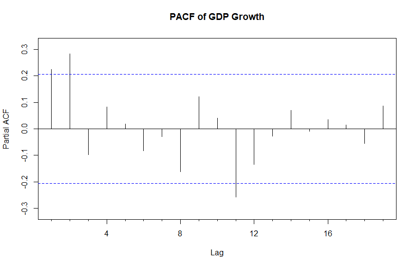

6 ARMA processes
6.1 AR(\(p\)) process
Earlier, we considered the AR(1) process. This can be generalized to the AR(\(p\)) process \[\begin{equation*} y_{t} = \nu + \phi_{1}y_{t-1}+\cdots+\phi_{p}y_{t-p}+u_{t}, \quad u_{t}\sim\mathsf{iid}\left(0,\sigma^{2}\right), \end{equation*}\] which can be rewritten \[\begin{equation*} \phi\left(B\right) (y_{t}- \mu) = u_{t}, \end{equation*}\] with the lag-polynomial \(\phi\left(B\right)=1-\phi_{1}B-\cdots-\phi_{p}B^{p}\). The current value of the process hence depends linearly on \(p\) past values of the process and the constant term, as well as on an unobserved random shock (or error term or “innovation”, depending on the perspective and situation).
- Notice again that \(\phi\left(B\right) \mu \equiv \phi\left(1\right) \mu \equiv \nu\).
A sufficient condition for the stationarity of an AR(\(p\)) process. A sufficient condition for the stationarity of the AR(\(p\)) process is that the roots of the polynomial \(\phi\left(z\right)\) \(\left(z\in \mathbb{C}\right)\) lie outside the unit circle/disk in the complex plane, or equivalently that \[\begin{equation*} \phi\left(z\right)\neq 0 \,\, \mathrm{for}\,\, \left\vert z\right\vert \leq1. \end{equation*}\]
- As an example, in the stationary AR(1) case (\(|\phi_1| < 1)\), the characteristic equation yields \(\phi(z)=0 \Leftrightarrow 1-\phi _{1}z = 0\) when \(|z| > 1\). This shows why in the case \(p=1\), the condition \(\left\vert \phi_{1}\right\vert<1\) was found sufficient to ensure the existence of a (causal) stationary MA(\(\infty\)) representation.
Notice that the resulting root (roots), when \(p>1\), can also be complex numbers. Related to the above stationarity condition, the absolute value or norm of a complex number \(z=x+iy\) \(\left(i=\sqrt{-1}\right)\) is defined as \(\left\vert z\right\vert=\sqrt{x^{2}+y^{2}}\). The latter form of the stationarity condition can be further expressed as \(\phi\left(z\right) =0\Rightarrow\left\vert z\right\vert>1\).
Still about possible complex roots: Because the coefficients of the polynomial \(\phi\left(z\right)\) are real numbers, the potential complex roots always appear as conjugate roots, that is, if \(\zeta=x+iy\) is a root, then also \(\bar{\zeta}=x-iy\) is a root.
Based on the above-mentioned, a stationary AR(\(p\)) process has an MA\(\left(\infty\right)\) representation \[\begin{equation*} (y_{t}- \mu)=\phi \left(B\right)^{-1}u_{t}=\psi \left(B\right)u_{t}=\sum_{j=0}^{\infty}\psi_{j}u_{t-j}, \end{equation*}\] where \(\psi\left(B\right) =\sum_{j=0}^{\infty}\psi_{j}B^{j}=\phi\left(B\right)^{-1}\). The coefficients \(\psi_{j}\) can be solved as a function of the parameters \(\phi_{1},\ldots,\phi_{p}\) from equation \[\begin{equation*} \left(1-\phi_{1}B-\cdots-\phi_{p}B^{p}\right) \left(\psi_{0}+\psi_{1}B+\psi_{2}B^{2}+\cdots \right)=1 \end{equation*}\] by interpreting the right hand side as a power series in \(B\), and setting the coefficients of \(B^{j}\) equal to each other on both sides of the equation.
Recall that two polynomials are the same if their coefficients are the same.
For instance, the coefficient of \(B^{0}\) is 1, so that \(\psi_{0}=1\). Next, the coefficient of \(B^{1}\) is zero, so that \(\psi_{1}-\phi_{1}\psi_{0}=0\) from which \(\psi_{1}=\phi_{1}\) follows. The general solution is left as an exercise.
Autocorrelation function. The autocorrelation function of an AR(\(p\)) process could be derived by making use of its MA\(\left(\infty\right)\) representation. Instead, we present an often used and rather practical alternative approach based on the AR(\(p\)) model equation.
Multiplying both sides of the demeaned AR(\(p\)) process presentation with \(y_{t-h}-\mu\) \(\left(h\geq0\right)\) and taking expectations, we obtain \[\begin{equation*} \mathsf{E}\Big((y_{t}-\mu)(y_{t-h}-\mu)\Big) =\phi_{1}\mathsf{E}\Big((y_{t-1}-\mu) (y_{t-h}-\mu)\Big)+\cdots+\phi_{p}\mathsf{E}\Big((y_{t-p}-\mu)(y_{t-h}-\mu)\Big) +\mathsf{E}\Big(u_{t}(y_{t-h}-\mu)\Big). \end{equation*}\] Because \(y_{t-h}\) (and likewise \(y_{t-h}-\mu\)) is a linear function of the innovation terms \(u_{t-h},\) \(u_{t-h-1},\ldots\), the variables \(y_{t-h}\) and \(u_{t}\) are independent when \(h>0\). Therefore, we get
\(\mathsf{E}\Big(u_t (y_{t-h}-\mu)\Big)=0, \quad h>0\),
For \(h=0\), it can be seen that \(\mathsf{E}\Big(u_{t}(y_{t}-\mu)\Big)=\mathsf{E}\left(u_{t}^{2}\right) =\sigma^{2}\).
As \(\gamma_{h}=\gamma_{-h}\), we get \[\begin{equation*} \gamma_{h}=\left\{ \begin{array} [c]{l} \phi_{1}\gamma_{1}+\cdots+\phi_{p}\gamma_{p}+\sigma^{2},\,\, h=0\\ \phi_{1}\gamma_{h-1}+\cdots+\phi_{p}\gamma_{h-p},\,\, h > 0. \end{array} \right. \end{equation*}\] Dividing this (in the case \(h>0\)) with the variance \(\gamma_{0}\) leads to the autocorrelation function of an AR(\(p\)) process \[\begin{equation*} \rho_{h}=\phi_{1}\rho_{h-1}+\cdots+\phi_{p}\rho_{h-p}, \quad h>0, \end{equation*}\] so that it satisfies a difference equation similar to the one the AR(\(p\)) process itself satisfies.
When the roots of \(\phi\left(z\right)\) lie outside the unit disk on the complex plane, the solution \(\rho_{h}\) to this difference equation decays exponentially to zero as the lag length \(h\) increases.
The solution \(\phi_{1}^{h}\) for the AR(1) is an example of this (this solution can also be easily obtained by solving the difference equation above in the case \(p=1\) using the initial value \(\rho_{0}=1\)).
Partial autocorrelation function. We next define the partial autocorrelation function, which is, among other things, a useful tool for model selection. In general, \(\alpha_h\) equals the conventional partial correlation coefficient that measures the correlation between the random variables \(y_t\) and \(y_{t-h}\) when the linear effect of the random variables \(y_{t-1}, \ldots, y_{t-h+1}\) has been first eliminated.
- Therefore, a particular consequence is that \(\left\vert \alpha_{h}\right\vert\leq1\).
In the case of an AR(\(p\)) process, the partial autocorrelation function \(\alpha_h\) has a special useful feature. For \(m>p\), an AR(\(p\)) process can be interpreted as an AR(\(m\)) process with \(\phi_{p+1}=\cdots=\phi_{m}=0\), which makes it clear that the partial autocorrelation function of an AR(\(p\)) process satisfies (also \(\alpha_0=1\)): \[\begin{equation*} y_t \thicksim \mathrm{AR}(p) \Rightarrow \alpha_p = \phi_p \quad \mathrm{and} \quad \alpha_h=0 \,\, \mathrm{for}\,\, h > p. \end{equation*}\] In other words, the partial autocorrelation function of an AR(\(p\)) process drops to zero after lag \(p\) (assuming \(\phi_p \neq 0\)).
The sample counterpart of the (population) partial autocorrelation function is obtained by using sample autocovariances \(c_h\).
The (sample) partial autocorrelation function is typically estimated using recursive algorithms or regression techniques, which are closely related to the Yule-Walker framework (see details in the Extra section below).
An important detail for model selection is that if an observed time series has been generated by an AR(\(p\)) process, its estimated autocorrelation function should decay to zero as the lag length increases with no apparent breaks, whereas the estimated partial autocorrelation function should have a visible break after lag \(p\).
To identify the location of the break point in the estimated partial autocorrelation function, one can make use of the following result:
In the case of an AR(\(p\)) process, the estimators \(\widehat{\alpha}_{h}\), \(h>p\), are approximately independent with \(\mathsf{N}\left(0,T^{-1}\right)\)–distribution. Therefore, \[\begin{equation*} \mathsf{P}(\left\vert \widehat{\alpha}_{h}\right\vert \geq1.96/\sqrt{T})\approx0.05 \end{equation*}\] when \(h>p\).
On the other hand, because the estimators \(\mathsf{c}_{1},\ldots,\mathsf{c}_{p}\) are consistent, the estimator \(\widehat{\alpha}_{p}\) converges in probability to the value of the theoretical partial autocorrelation coefficient \(\alpha_{p}\) which for an AR(\(p\)) process is nonzero. Therefore, for \(h=p\), \(\mathsf{P}(\left\vert \widehat{\alpha}_{h}\right\vert \geq1.96/\sqrt{T})\) approaches one as the sample size increases.
These remarks justify depicting the sample partial autocorrelation coefficients similar to that of the usual autocorrelation coefficients, and adding to it horizontal critical/confidence bands to make its interpretation easier.
Empirical example. As an example, below we present the estimated sample partial autocorrelation functions (with lag lengths \(h=0,\ldots,20\)) of the quarterly U.S. real GDP growth series, together with the above-mentioned critical/confidence bands.
The corresponding sample autocorrelation functions are shown already above.
The first two sample partial autocorrelation coefficients \(\widehat{\alpha}_{1}\) and \(\widehat{\alpha}_{2}\) are clearly outside the confidence bands, whereas the rest lie within these bands (except 11th lag), suggesting an AR(2) process. The sample autocorrelation function partly supports this conclusion, while also MA(2) or some ARMA model might clearly be potential candidate for the GDP growth.
We are coming back to empirical model selection later in this material.
6.2 MA(\(q\)) process and invertibility
The MA(\(q\)) process is defined as \[\begin{equation*} y_{t} = \mu + u_{t}+\theta_{1}u_{t-1}+\cdots+\theta_{q}u_{t-q}, \quad u_{t}\sim\mathsf{iid}\left(0,\sigma^{2}\right), \end{equation*}\] or alternatively using the lag operator as \[\begin{equation*} (y_{t}-\mu)=\theta\left(B\right)u_{t},\,\, u_{t}\sim\mathsf{iid}\left(0,\sigma^{2}\right) \end{equation*}\] with the lag-polynomial \(\theta\left(B\right)=1+\theta_{1}B+\cdots+\theta_{q}B^{q}\). Therefore, the current value of the process is assumed to depend linearly on the present and last \(q\) unobservable random shocks. Because an MA(\(q\)) process is a special case of the (causal) linear process, it is always both weakly and strictly stationary. Moreover, we get
\(\mathsf{E}\left( y_{t}\right) = \mu\),
\(\mathsf{Var}\left( y_{t}\right) =\gamma _{0}=\left( 1+\theta _{1}^{2}+\cdots +\theta _{q}^{2}\right) \sigma^{2}\).
Autocorrelation function. By making use of the general results of linear process, the MA(\(q\)) process has the autocovariance function given by \[\begin{equation*} \gamma_{h}= \begin{cases} \sigma^{2}\sum_{j=0}^{q-h}\theta_{j}\theta_{j+h}, & \text{for } \, 0\leq h\leq q,\\ 0, & \text{for } \, h>q, \end{cases} \end{equation*}\] where \(\theta_0=1\). The autocorrelation function is then obtained via the formula \(\rho_{h}=\gamma_{h} / \gamma_{0}\).
Therefore, the autocorrelation function of an MA(\(q\)) process drops to zero after lag \(q\) (assuming that \(\theta_{q}\neq0\)).
If one observes a similar feature in a sample autocorrelation function, one can consider an MA(\(q\)) process as a good candidate to model the time series.
When considering the suitability of an MA(\(q\)) process, one can make use of the following result: In the case of an MA(\(q\)) process, the estimators \(\mathsf{r}_{h}\), \(h>q\), are approximately normally distributed with mean zero and variance \(\left(1+2\rho_{1}^{2}+\cdots+2\rho_{q}^{2}\right)/T\). Therefore, if one wants to test whether an individual autocorrelation coefficient is statistically different from zero at the 5% significance level, the estimates \(\mathsf{r}_{h}\), \(h>q\), should be compared with the critical bounds \[\begin{equation*} \pm1.96\sqrt{\mathsf{\widehat{w}}_{q}/T}, \quad \mathsf{\widehat{w}}_{q}=\left(1+2\mathsf{r}_{1}^{2}+\cdots+2\mathsf{r}_{q}^{2}\right). \end{equation*}\] In this case, \(\mathsf{P}(\left\vert \mathsf{r}_{h}\right\vert \geq1.96\sqrt{\mathsf{\widehat{w}}_{q}/T})\approx0.05\). Note also that the bounds above are wider than in the case \(y_{t}\sim\mathsf{iid}\left(0,\sigma^{2}\right)\) when \(\mathsf{\widehat{w}}_{q}\) is replaced by \(1\).
Invertibility. It can be shown that in a (causal) AR(\(p\)) process there exists a one to one correspondence between the parameters \(\boldsymbol{\phi}=(\phi_1,\ldots,\phi_p)\) and \(\sigma^{2}\), and the autocovariance function. For an MA(\(q\)) process, a similar result does not hold.
To see this, consider as an example the MA(1) process for which it holds that (assume that \(\theta_1 \neq0\)) \[\begin{equation*} \gamma_{0}=\sigma^{2}\left(1+\theta_1^{2}\right)=\sigma^{2}\theta_1^{2}\left(1+1/\theta_1^{2}\right) \,\, \mathrm{and} \,\, \gamma_{1}=\sigma^{2}\theta_1=\theta_1^{2}\sigma^{2}\left(1/\theta_1\right)\text{.} \end{equation*}\] Define \(\theta_1^{\ast}=1/\theta_1\) and \(\sigma_{\ast}^{2}=\theta_1^{2}\sigma^{2}\), so that \(u_{t}^{\ast}=\theta_1u_{t}\sim\mathsf{iid}\left(0,\sigma_{\ast}^{2}\right)\). Now, it can be seen that the two MA(1) processes \(y_{t}=u_{t}+\theta_1 u_{t-1}\) and \(y_{t}^{\ast}=u_{t}^{\ast}+\theta_1^{\ast}u_{t-1}^{\ast}\) have exactly the same autocovariance function, so that they cannot be distinguished from each other based on autocovariances.
If in addition \(u_{t}\sim\mathsf{nid}\left( 0,\sigma^{2}\right)\), the entire probability structures of these two processes are indistinguishable.
A consequence is that estimating the parameters based on an observed time series, unless one “tells” the method, which of the parameter combinations \(\left(\theta_1,\sigma^{2}\right)\) and \(\left( \theta_1^{\ast},\sigma_{\ast}^{2}\right)\) (that fit the data equally well) should be chosen.
The typical solution to the above problem is to set the condition \(\left\vert \theta_1\right\vert <1\). When one assumes \(\left\vert \theta_1\right\vert<1\) in an MA(1) process, one can use the equation \(u_{t}=y_{t}-\mu - \theta_1 u_{t-1}\) and repetitive substitutions to first obtain \(u_{t} = (y_{t}-\mu) -\theta_1 (y_{t-1}-\mu) +\theta_1^{2}u_{t-2}\), and eventually \[\begin{equation*} (y_{t}-\mu)=-\sum_{j=1}^{k}\left(-\theta_1\right)^{j}(y_{t-j}-\mu)-\left(-\theta_1\right)^{k+1}u_{t-k-1}+u_{t}. \end{equation*}\] Similarly as when considering the stationarity of an AR(1) process, it can be concluded, given that the condition \(\left\vert \theta_1\right\vert <1\), \[\begin{equation*} y_{t} -\mu =-\sum_{j=1}^{\infty}\left(-\theta_1\right)^{j} (y_{t-j}-\mu) + u_{t}. \end{equation*}\] That is, when \(\left\vert \theta_1 \right\vert<1\) holds, an MA(1) process can be “inverted” to an AR\(\left(\infty\right)\) process, which explains why in the case \(\left\vert \theta_1\right\vert<1\) an MA(1) process is called invertible.
Invertibility condition of an MA(\(q\)) process . An MA(\(q\)) process is invertible, if the roots of the polynomial \(\theta\left(z\right)\) \(\left(z\in\mathbb{C}\right)\) lie outside the unit circle/disk on the complex plane or, equivalently, if \[\begin{equation*} \theta\left(z\right) \neq0 \,\,\, \mathrm{for} \,\,\, \left\vert z\right\vert\leq1. \end{equation*}\]
Similarly as in the case of the stationarity condition of an AR(\(p\)) process, invertibility ensures that there exists an AR\(\left(\infty\right)\) representation also for MA(\(q\)) processes. In other words, when the invertibility condition holds, one can formally solve \(u_{t}\) from equation \((y_{t}-\mu)=\theta\left(B\right)u_{t}\) by dividing both sides by the polynomial \(\theta\left(B\right)^{-1}\). The solution is \[\begin{equation*} \pi\left(B\right)(y_{t}-\mu) = u_{t} \,\,\, \mathrm{or} \,\,\, \sum_{j=0}^{\infty}\pi_{j}(y_{t-j}-\mu)=u_{t}, \end{equation*}\] where \(\pi\left(B\right)=\sum_{j=0}^{\infty}\pi_{j}B^{j}=\theta\left(B\right)^{-1}\) and the coefficients \(\pi_{j}\) can be solved as a function of the parameters \(\theta_{1},\ldots,\theta_{q}\) from the equation \[\begin{equation*} \left(1+\theta_{1}B+\cdots+\theta_{q}B^{q}\right) \left(\pi_{0}+\pi_{1}B+\pi_{2}B^{2}+\cdots\right)=1 \end{equation*}\] by interpreting the right hand side as a power series in \(B\), setting the coefficients of \(B^{j}\) equal on both sides of the equation (and \(\pi_{0}=1\)).
As in the MA(1) case, invertibility ensures that there exists a one to one correspondence between the autocovariance function of an MA(\(q\)) process and the parameters \(\boldsymbol{\theta}=\left(\theta_{1},\ldots,\theta_{q}\right)\) and \(\sigma^{2}\).
Except for the first-order case, this correspondence is rather complicated, and we omit the details.
In what follows (unless otherwise mentioned), MA processes are always assumed to be invertible.
Partial autocorrelation function. The general definition of a partial autocorrelation function presented in the previous subsection can also be applied in the case of an MA(\(q\)) process, but the calculations involved would become rather complicated. However, because an MA(\(q\)) process has (due to invertibility and assuming here \(\theta_{q}\neq0\)) an AR(\(\infty\)) representation, and based on what was said above about the partial autocorrelation function of an AR(\(p\)) process, it is intuitively clear that the partial autocorrelation function of an MA(\(q\)) process does not drop to zero at any point, but rather smoothly decays towards zero.
It can be shown that the the partial autocorrelation function of an MA(1) process is \[\begin{equation*} \alpha_{h}=-\left(-\theta_{1}\right)^{h}/\left(1+\theta_{1}^{2}+\cdots+\theta_{1}^{2h}\right). \end{equation*}\] Because \(\left\vert \theta_{1}\right\vert<1\), the partial autocorrelation function of an MA(1) process decays to zero at an exponential rate as the lag length \(h\) increases.
For a general MA(\(q\)) process, it can be shown that the partial autocorrelation function decays to zero at an exponential rate, potentially following the shape of a dampening sine wave.
6.3 ARMA(\(p,q\)) process
An ARMA(\(p\),\(q\)) process can be characterized as a combination of AR(\(p\)) and MA(\(q\)) processes. It is defined by the equation \[\begin{equation*} y_{t} = \nu + \phi_{1}y_{t-1}+\cdots+\phi_{p}y_{t-p}+u_{t}+\theta_{1}u_{t-1}+\cdots+\theta_{q}u_{t-q}, \end{equation*}\] where \(u_{t}\sim\mathsf{iid}\left(0,\sigma^{2}\right)\). Similarly as in the case of an AR(\(p\)) process, the current value \(y_{t}\) is assumed to depend linearly on \(p\) past values of the process. Unlike the AR(\(p\)) process, the error term is now (generally) not an independent random shock, but instead an autocorrelated MA(\(q\)) process.
Using the lag operator and the lag-polynomials \(\phi\left(B\right)=1-\phi_{1}B-\cdots-\phi_{p}B^{p}\) and \(\theta\left(B\right)=1+\theta_{1}B+\cdots+\theta_{q}B^{q}\), the ARMA(\(p,q\)) process can be expressed as \[\begin{equation*} \phi\left(B\right)(y_{t}-\mu) = \theta\left(B\right)u_{t}. \end{equation*}\]
If \(\theta\left(B\right)=1\) (that is, \(q=0\)), one obtains the AR(\(p\)) process as a special case.
If \(\phi\left(B\right)=1\) (that is, \(p=0\)), one obtains the MA(\(q\)) process.
Stationarity and invertibility. Based on what was said for linear processes, it is clear that an ARMA(\(p\),\(q\)) process has a well-defined (causal) MA(\(\infty\)) representation if the polynomial \(\phi\left(z\right)\) satisfies the sufficient stationarity condition of an AR(\(p\)) process (what was said in the case of an AR(\(p\)) process holds, but now with MA(\(q\)) error terms).
- A sufficient condition for the stationarity of the ARMA(\(p\),\(q\)) process is that the roots of the polynomial \(\phi\left(z\right)\) \(\left(z\in\mathbb{C}\right)\) lie outside the unit circle/disk on the complex plane, or equivalently that \[\begin{equation*} \phi\left( z\right) \neq0 \,\,\, \mathrm{for} \,\,\, \left\vert z\right\vert \leq1. \end{equation*}\]
- An ARMA(\(p\),\(q\)) process is invertible, if the roots of the polynomial \(\theta\left(z\right)\) \(\left(z\in\mathbb{C}\right)\) lie outside the unit circle/disk on the complex plane, or equivalently if \[\begin{equation*} \theta\left(z\right)\neq0 \,\,\, \mathrm{for} \,\,\, \left\vert z\right\vert \leq1. \end{equation*}\] The general discussion concerning invertibility in the previous subsection in connection with the MA(1) process also holds here and generalizes to the case of an ARMA(\(p\),\(q\)) process.
As can be deduced from what was discussed above, when the stationarity condition holds, an ARMA(\(p\),\(q\)) process has an MA\(\left(\infty\right)\) representation (cf. the AR(\(p\)) case) \[\begin{equation*} (y_{t}-\mu)=\frac{\theta\left(B\right)}{\phi\left(B\right)}u_{t}=\psi\left(B\right)u_{t}, \end{equation*}\] where \(\psi\left(B\right)=\sum_{j=0}^{\infty}\psi_{j}B^{j}=\theta\left(B\right)\phi\left(B\right)^{-1}\) and the coefficients \(\psi_{j}\) can be solved as a function of the parameters \(\phi_{1},\ldots,\phi_{p}\) and \(\theta_{1},\ldots,\theta_{q}\) by equating the coefficients of \(B^{j}\) on both sides of the equation \[\begin{equation*} \left(1-\phi_{1}B-\cdots-\phi_{p}B^{p}\right)\left(\psi_{0}+\psi_{1}B+\psi_{2}B^{2}+\cdots\right)=1+\theta_{1}B+\cdots+\theta_{p}B^{q}. \end{equation*}\]
- From this equation, it can be solved that \(\psi_{0}=1\), \(\theta_{1}=\psi_{1}-\psi_{0}\phi_{1}\), and in general, \[\begin{equation*} \psi_{j}=\sum_{i=1}^{p}\phi_{i}\psi_{j-i}+\theta_{j}, \,\, j=0,1,2,\ldots, \end{equation*}\] where \(\theta_{0}=1,\) \(\theta_{j}=0\), \(j>q\), and \(\psi_{j}=0\), \(j<0\).
On the other hand, when the invertibility condition holds, an ARMA(\(p\),\(q\)) process has an AR\(\left(\infty\right)\) representation \[\begin{equation*} \frac{\phi\left(B\right)}{\theta\left(B\right)}(y_{t}-\mu)=\pi\left(B\right)(y_{t}-\mu)=u_{t}, \end{equation*}\] where \(\pi\left(B\right)=\sum_{j=0}^{\infty}\pi_{j}B^{j}=\phi\left(B\right)\theta\left(B\right)^{-1}\). The coefficients \(\pi_{j}\) can be solved similarly as the \(\psi_{j}\)’s above (just exchange the roles of the polynomials \(\phi\left(B\right)\) and \(\theta\left(B\right)\)). The end result can be expressed as \[\begin{equation*} \pi_{j}=-\sum_{i=1}^{p}\theta_{i}\pi_{j-i}-\phi_{j},\,\, j=0,1,2,\ldots, \end{equation*}\] where \(\phi_{0}=-1,\) \(\phi_{j}=0\), \(j>p\), and \(\pi_{j}=0\), \(j<0\). In particular, it holds that \(\pi_{0}=1\) and, as in the case of the coefficients \(\psi_{j}\), \(\pi_{j}\rightarrow 0\) at an exponential rate as \(j\rightarrow \infty\).
Identification condition. Earlier in connection to MA processes, the invertibility condition was motivated by the fact that it guarantees the existence of a one-to-one correspondence between the autocovariance function of a process and its model parameters. For general ARMA(\(p\),\(q\)) processes, invertibility alone is not sufficient to guarantee the existence of such a correspondence, which is also required for maximum likelihood estimation of the parameters.
- Consider as an example the simple case of an ARMA(1,1) process with the linear representation \[\begin{equation*} (y_{t}-\mu)=\frac{1+\theta_{1}B}{1-\phi_{1}B}u_{t}. \end{equation*}\] In the special case \(\phi_{1}=-\theta_{1}\), it is clear that the polynomials on the right hand side can be cancelled out, resulting in the equation \(y_{t}-\mu=u_{t}\) so that the process is not a “real” ARMA(1,1) process, but instead just white noise. This implies that the parameters \(\phi_{1}\) and \(\theta_{1}\) are not identified in the sense that maximum likelihood estimation will not work because this method cannot distinguish different pairs of parameter values that satisfy the restriction \(\phi_{1}=-\theta_{1}\) (and \(\left\vert \phi_{1}\right\vert <1\), \(\left\vert \theta_{1}\right\vert<1\)).
Identification (or uniqueness) condition of an ARMA(\(p\),\(q\)) process. The polynomials \(\phi\left(z\right)=1-\phi_{1}z-\cdots-\phi_{p}z^{p}\) and \(\theta\left(z\right)=1+\theta_{1}z+\cdots+\theta_{q}z^{q}\) of a stationary and invertible ARMA(\(p\),\(q\)) process are assumed to have no common roots and \(\phi_{p}\neq0\) or \(\theta_{q}\neq0\).
Quite often, the requirement that \(\phi_{p}\neq0\) or \(\theta_{q}\neq0\) is not explicitly mentioned but is understood to be contained in the condition ruling out common roots.
Unless otherwise mentioned, in what follows, we assume that this identification condition holds.
Autocorrelation function of an ARMA(\(p\),\(q\)) process can be derived in a manner similar to the AR(\(p\)) case.
- In what follows, we only present the general principle of the solution.
Multiplying both sides of the ARMA(\(p,q\)) model equation with \(y_{t-h}\) \(\left(h\geq0\right)\) and taking expectations yields \[\begin{align*} \mathsf{E}\Big((y_{t}-\mu)(y_{t-h}-\mu)\Big) & =\phi_{1}\mathsf{E}\Big(y_{t-1}(y_{t-h}-\mu)\Big)+\cdots+\phi_{p}\mathsf{E}\Big((y_{t-p}-\mu)(y_{t-h}-\mu)\Big)+\mathsf{E}\Big(u_{t}(y_{t-h}-\mu)\Big) \\ & +\theta_{1}\mathsf{E}\Big(u_{t-1}(y_{t-h}-\mu)\Big)+\cdots+\theta_{q}\mathsf{E}\Big(u_{t-q}(y_{t-h}-\mu)\Big). \end{align*}\] Making use of the MA\(\left(\infty\right)\) representation and the definition of autocovariance this further leads to \[\begin{equation*} \gamma_{h} = \begin{cases} \phi_{1} \gamma_{h-1} + \cdots + \phi_{p}\gamma_{h-p} + \sigma^{2}\sum_{j=0}^{\infty}\theta_{h+j}\psi_{j}, & 0 \leq h < \max\left\{p, q+1\right\}, \\ \phi_{1} \gamma_{h-1} + \cdots + \phi_{p}\gamma_{h-p}, & h \geq \max\left\{p, q+1\right\} \end{cases} \end{equation*}\] where \(\theta_{0}=1\) and \(\theta_{j}=0\) for \(j\notin\left\{0,\ldots,q\right\}\). The autocorrelation function is then obtained using the formula \(\rho_{h}=\gamma_{h}/\gamma_{0}\). Moreover, the coefficients \(\psi_{j}\) can be expressed as function of the parameters \(\phi_{1},\ldots,\phi_{p}\) and \(\theta_{1},\ldots,\theta_{q}\).
Because this recursive solution is obtained from a difference equation similar to the one the autocovariances of an AR(\(p\)) process satisfy, it is rather clear that as the lag length \(h\) increases, the autocorrelation function of an ARMA(\(p,q\)) process decays exponentially to zero, potentially following the shape of a dampening sine wave (in the case \(p=1\) this is rather easy to verify).
Because an ARMA(\(p,q\)) process has an AR(\(\infty\)) representation when the invertibility condition holds, one can use the general definition of the partial autocorrelation function to conclude that the general shape of the partial autocorrelation function of an ARMA(\(p,q\)) process is comparable to that of the autocorrelation function.
To conclude and importantly, neither the autocorrelation nor the partial autocorrelation function of an ARMA(\(p,q\)) process ever drop to zero but instead both steadily decay towards zero.